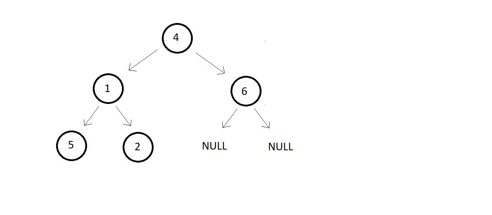

We have basic idea that how PreOrder traversal works. Now we'll see that in great detail
Example binary tree ↓

// Constructing the root node - Using Function (Recommended)
struct node *p = createNode(4);
struct node *p1 = createNode(1);
struct node *p2 = createNode(6);
struct node *p3 = createNode(5);
struct node *p4 = createNode(2);
// Finally The tree looks like this:
// 4
// / \
// 1 6
// / \
// 5 2
// Linking the root node with left and right children
p->left = p1;
p->right = p2;
p1->left = p3;
p1->right = p4;
void preOrder(struct node* root){
if(root!=NULL){
printf("%d ", root->data);
preOrder(root->left);
preOrder(root->right);
}
}
#include <stdio.h>
#include <stdlib.h>
struct node
{
int data;
struct node *left;
struct node *right;
};
struct node *createNode(int data)
{
struct node *n;
n = (struct node *)malloc(sizeof(struct node));
n->data = data;
n->left = NULL;
n->right = NULL;
return n;
}
void preOrder(struct node *root)
{
if (root != NULL)
{
printf("%d ", root->data);
preOrder(root->left);
preOrder(root->right);
}
}
int main()
{
// constructing the root node - Using Function (Recommended)
struct node *p = createNode(4);
struct node *p1 = createNode(1);
struct node *p2 = createNode(6);
struct node *p3 = createNode(5);
struct node *p4 = createNode(2);
// Linkng the rootnode with left and right childre
p->left = p1;
p->right = p2;
p1->left = p3;
p1->right = p4;
preOrder(p);
return 0;
}